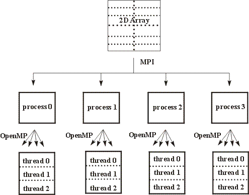

HeGaPa Mode 1 : Mixed Mode of Programming Using MPI & OpenMP
|
Examples using a mixed(hybrid) mode-programming model such as MPI-OpenMP have been discussed.
By utilizing the mixed(hybrid) mode-programming model (MPI-OpenMP) ,we should be able to take
advantage of the benefits of both models. The majority of mixed mode applications involve a hierarchical model,
MPI parallelisation occurring at the top level, and OpenMP parallelisation occurring below .Compiling and linking
of mixed mode-programming MPI-OpenMP programs are explained in detail.Examples include numerical integration,infinity
norms computation, matrix-vectore multiplication.
|
|
|
Example 1.1
|
Write an MPI-OpenMP program to print Hello World" . You have to use
MPI Basic Library Calls and OpenMP PARALLEL For Directive.
|
Example 1.2
|
Write an MPI-OpenMP program to compute the value of PI pie function by numerical integration of
a function f(x) = 4/(1+x2) between the limits 0 and 1. You have to use
MPI Collective Communication and Computation Library Calls and OpenMP PARALLEL For
Directive and CRITICAL section.
|
Example 1.3
|
Write an MPI-OpenMP program to calculate Infinity norm of a matrix using block striped
partitioning with row wise data distribution.
You have to use MPI Collective Communication and OpenMP Parallel For Directive and PRIVATE, SHARED Clauses.
|
Example 1.4
|
Write a MPI-OpenMP program to compute the matrix-vector multiplication using self scheduling algorithm.
You have to use MPI Collective Communication and OpenMP Parallel For Directive and PRIVATE, SHARED Clauses.
|
Example 1.5
|
Write a MPI-OpenMP program to compute the matrix into matrix Multiplication
using Checker-Board Partitoning of input Matrices (Assignment).
|
Example 1.6
|
Write a MPI-openmp program to solve a system of linear equations Ax=b using Conjugate Gradient Method. (Assignment).
|
An Overview of MPI-OpenMP
|
MPI - OpenMP
Message passing programs written in MPI are portable and should transfer easily to cluster of Multi-Core processor Systems.
Message passing is required to communicate between nodes (boxes) using different networks,and message passing
in node (Multi-core processors) require communication within node. Performance depends upon the
efficient implementation within a node.
OpenMP is an Application Program Interface (API) that may be used to explicitly direct multi-threaded, shared memory
parallelism. It is a specification for a set of compiler directives, library routines and environment variables
that can be used to specify shared memory parallelism in Fortran and C/C++ programs.
The OpenMP is a shared memory standard supported by most of the hardware and software vendors.
OpenMP is comprised of three primary API components such as Compiler Directives,
Runtime Library Routines, and Environment Variables
OpenMP is portable and the API is specified for C/C++ and Fortran.
Multiple platforms have been implemented including most Unix platforms and Windows NT. Efforts are going on
to implement on Multi-Core processors to enhance the performance. The available programming environment on most
of the Multi-Core processors will address the thread affinity to core and overheads in OpenMP programming environment.
A combination of shared memory and message
passing parallelisation paradigms within the same application (mixed mode programming) may provide a more efficient
parallelisation strategy than pure MPI.
While mixed code may involve other programming languages such as High Performance Fortran (HPF) and POSIX threads.
Mixed MPI and OpenMP codes are likely to represent the most widespread use of mixed mode programming on SMP
cluster due to their portability and the fact that they represent industry standards for distributed and shared
memory systems respectively.
While SMP clusters offer the greatest reason for developing mixed mode code, both the OpenMP and MPI paradigms
have different advantages and disadvantages and by developing such a model these characteristics might even be
exploited to give the best performance on a single SMP system.
Thread Safety in MPI-OpenMP :
Although a large number of MPI implementations are thread-safe, mixed mode programming cannot be
guaranteed. To ensure the code is portable all MPI calls should be made within thread sequential
regions of the code. This often creates little problem as the majority of codes involve the OpenMP
parallelisation occurring beneath the MPI parallelisation and hence the majority of MPI
calls occur outside the OpenMP parallel regions. When MPI calls occur within an
OpenMP parallel region,
the
calls should be placed inside a CRITICAL , MASTER or SINGLE REGION ,depending on the nature of the code.
Care should be taken with SINGLE regions, as different threads can execute the code.
Ideally the number of threads should be set from within each MPI process using
OMP_SET_NUM_THEREADS(n) as this is more portable than the OMP_NUM_THREADS environment
variable.
In mixed mode-programming model, the advantage of the benefits of MPI & OpenMP models can be taken in which, a mixed mode
program make use of the explicit control data placement policies of MPI with the finer grain parallelism of OpenMP.
The majority of mixed mode applications involve a hierarchical model, MPI parallelisation occurring at the top level,
and OpenMP parallelisation occurring below. For example, Figure 1 shows a two-dimensional grid, which has been
divided between four MPI processes.

Figure 1: Schematic representation of a hierarchical mixed mode progamming model for a two-dimensional grid array.
In figure 1, the sub-arrays have then been further divided between three OpenMP threads. This model closely maps to the
architecture of an SMP cluster,the MPI parallelisation occurring between the SMP boxes and the OpenMP parallelisation
within the boxes. Message passing could be used within a code when this is relatively simple to implement and
shared memory parallelism used where message passing is difficult. Most of the manufacturers provide extended
versions of their communication library for clusters of multiprocessors; existing MPI codes can be directly used
with a unified MPI model. The alternative is mixing MPI with a shared memory model such as OpenMP. In that case,
different possibilities exist, which must be compared according to the performance and programming effort tradeoff.
In the mixed mode programming concept, MPI should be thread safe. If MPI is not thread safe, the program which is having
non-blocking MPI library calls and OpenMP in certain order may give wrong results.
Special care is needed while
using specific MPI library calls in mixed mode programming with OpenMP to avoid race conditions or to get correct results.
(A) Fine-grain parallelisation :
From an existing MPI code, the simplest approach is the incremental one:
It consists of OpenMP parallelisation of the loop nests in the computation part of the MPI code.
This approach is also called OpenMP fine-grain or loop level parallelisation.
Several options can be used according to
- The programming effort
- The choice of the loop nests to parallelise
Several levels of programming effort are required. First possibility consists in parallelising loop nests
in the computation part of the MPI code without any manual optimization. Only the correctness of the parallel
version versus the sequential version semantic is checked. But the incremental approach can be
significantly improved by applying several manual optimizations (loop permutation, loop exchange,use of
temporary variables). These optimizations are required
Another issue is the choice of the loop nests to parallelise. One option is to parallelise all loop nests.
The alternative option consists in selecting by profiling the loop nests that contribute significantly
to the global execution time.
(B) Coarse-grain parallelisation :
Instead of applying a two level parallelisation (process level and loop level), another currently
investigated approach is the coarse-grain OpenMP SPMD parallelisation. In this approach, OpenMP
is still used to take advantage of the shared memory inside the SMP nodes or Multi-Core Processors but a SPMD
programming style is used instead of the traditional shared memory multi-thread approach.
In this mode, OpenMP is used to spawn N threads in the main program, having each thread act similarly to
a MPI process.
The OpenMP PARALLEL directive is used at the outermost level of the program. The principle is to spawn
the threads just after the spawn of the MPI processes (some initializations may separate the two spawns). As
for the message passing SPMD approach, the programmer must take care of several issues:
- Array distribution among threads
- Work distribution among threads
- Coordination between threads
Since the array distribution is done assuming a shared memory, the distribution of the array only concerns
the attribution of different array regions to the different running threads.
For maximum performance, these regions should not overlap for write references.
The work distribution is made according to the array distribution. Typically, the OpenMP DO directive
is not used for distributing the loop iterations among threads. Instead, the programmer
inserts some calculations of the loop boundaries that depend on the thread number.
Co-ordinating the threads involves managing critical sections (I/O, MPI calls) using either OpenMP
directives like MASTER or thread library calls like OMP_GET_THREAD_NUM() to guard
conditional statements.
On Multi-Core processors, the implementation of MPI and OpenMP give insight into the estimation of overheads
and the use of OpenMP may alleviate some of the overheads from data movement, false sharing, and contention.
The overheads associated with automated generation of threaded code from directives have been shown
minimal in the context of variety of applications on dual/quad core processors.
A programmer must weigh all above considerations before deciding on an API (MPI & OpenMP) for programming
and performance point of view.

|
Basic MPI 1.X library Calls
|
Brief Introduction to MPI 1.X Library Calls :
Most commonly used MPI Library calls in FORTRAN/C -Language
have been explained below.
-
Syntax : C
MPI_Init(int *argc, char **argv);
Syntax : Fortran
MPI_Init(ierror)
Integer ierror
Initializes the MPI execution environment
This call is required in every MPI program and must be the first MPI call. It
establishes the MPI "environment". Only one invocation of MPI_Init can occur in each
program execution. It takes the command line arguments as parameters. In a FORTRAN call to
MPI_Init the only argument is the error code. Every Fortran MPI subroutine returns an error
code in its last argument, which is either MPI_SUCCESS or an implementation-defined error code.
It allows the system to do any special setup so that the MPI library can be used.
-
Syntax : C
MPI_Comm_rank (MPI_Comm comm, int rank);
Syntax : Fortran
MPI_Comm_rank (comm, rank, ierror)
integer comm, rank, ierror
Determines the rank of the calling process in the communicator
The first argument to the call is a communicator and the rank of the process is returned
in the second argument. Essentially a communicator is a collection of processes
that can send messages to each other. The only communicator needed for basic programs
is MPI_COMM_WORLD and is predefined in MPI and consists of the processees running
when program execution begins.
-
Syntax : C
MPI_Comm_size (MPI_Comm comm, int num_of_processes);
Syntax : Fortran
MPI_Comm_size (comm, size, ierror)
integer comm, size, ierror
Determines the size of the group associated with a communicator
This function determines the number of processes executing the program. Its first argument
is the communicator and it returns the number of processes in the communicator in its second
argument.
-
Syntax : C
MPI_Finalize()
Syntax : Fortran
MPI_Finazlise(ierror)
integer ierror
Terminates MPI execution environment
This call must be made by every process in a MPI computation. It terminates the MPI "environment",
no MPI calls my be made by a process after its call to MPI_Finalize.
-
Syntax : C
MPI_Send (void *message, int count, MPI_Datatype
datatype, int destination, int tag,
MPI_Comm comm);
Syntax : Fortran
MPI_Send(buf, count, datatype, dest, tag, comm, ierror)
<type> buf (*)
integer count, datatype, dest, tag, comm, ierror
Basic send (It is a blocking send call)
The first three arguments descibe the message as the address,count and the datatype.
The content of the message are stored in the block of memory refrenced by the address.
The count specifies the number of elements contained in the message which are of
a MPI type MPI_DATATYPE. The next argument is the destination, an integer specifying
the rank of the destination process.
The tag argument helps identify messages.
-
Syntax : C
MPI_Recv (void *message, int count, MPI_Datatype
datatype, int source, int tag, MPI_Comm
comm, MPI_Status *status)
Syntax : Fortran
MPI_Recv(buf, count, datatype, source, tag, comm, status, ierror)
<type> buf (*)
integer
count, datatype, source, tag, comm, status, ierror
Basic receive ( It is a blocking receive call)
The first three arguments descibe the message as the address,count and the datatype.
The content of the message are stored in the block of memory referenced by the address.
The count specifies the number of elements contained in the message which are of a MPI
type MPI_DATATYPE. The next argument is the source which specifies the rank of the sending
process. MPI allows the source to be a "wild card". There is a predefined constant
MPI_ANY_SOURCE that can be used if a process is ready to receive a message from any
sending process rather than a particular sending process. The tag argument helps identify
messages. The last argument returns information on the data that was actually received.
It references a record with two fields - one for the source and the other for the tag.
-
Syntax : C
MPI_Sendrecv (void *sendbuf, int sendcount, MPI_Datatype
sendtype, int dest, int sendtag, void
*recvbuf , int recvcount, MPI_Datatype recvtype, int
source, int recvtag, MPI_Comm comm, MPI_Status
*status);
Syntax : Fortran
MPI_Sendrecv (sendbuf, sendcount, sendtype, dest, sendtag, recvbuf,
recvcount, recvtype, source, recvtag, comm, status, ierror)
<type> sendbuf (*), recvbuf (*)
integer
sendcount, sendtype, dest, sendtag, recvcount, recvtype, source, recvtag
integer
comm, status(*), ierror
Sends and recevies a message
The function MPI_Sendrecv, as its name implies, performs both a send ana a
receive. The parameter list is basically just a concatenation of the parameter
lists for the MPI_Send and MPI_Recv. The only difference is that the
communicator parameter is not repeated. The destination and the source
parameters can be the same. The "send" in an MPI_Sendrecv can be matched by an
ordinary MPI_Recv, and the "receive" can be matched by and ordinary MPI_Send.
The basic difference between a call to this function and MPI_Send followed by
MPI_Recv (or vice versa) is that MPI can try to arrange that no deadlock occurs
since it knows that the sends and receives will be paired.
-
Syntax : C
MPI_Isend (void* buf, int count, MPI_Datatype
datatype, int dest, int tag, MPI_Comm
comm, MPI_Request *request)
Syntax : Fortran
MPI_Isend (buf, count, datatype, dest, tag, comm, request, ierror)
<type> buf (*)
integer
count, datatype, dest, tag, comm, request, ierror
Begins a nonblocking send
MPI_Isend is a nonblocking send. The basic functions in MPI for starting
non-blocking communications are MPI_Isend. The "I" stands for "immediate,"
i.e., they return (more or less) immediately.
-
Syntax : C
MPI_Irecv (void* buf, int count, MPI_Datatype
datatype, int source, int tag, MPI_Comm
comm, MPI_Request *request)
Syntax : Fortran
MPI_Irecv (buf, count, datatype, source, tag, comm, request,
ierror)
<type> buf (*)
integer
count, datatype, source, tag, comm, request, ierror
Begins a nonblocking send
MPI_Irecv begins a nonblocking receive. The basic functions in MPI for starting
non-blocking communications are MPI_Irecv. The "I" stands for "immediate,"
i.e., they return (more or less) immediately.
-
Syntax : C
MPI_Wait (MPI_Request *request, MPI_Status *status);
Syntax : Fortran
MPI_Wait (request, status, ierror)
integer request, status (*), ierror
Waits for a MPI send or receive to complete
MPI_Wait waits for an MPI send or receive to complete. There are variety of functions
that MPI uses to complete nonblocking operations. The simplest of these is
MPI_Wait. It can be used to complete any nonblocking operation. The request
parameter corresponds to the request parameter returned by MPI_Isend or
MPI_Irecv.
-
Syntax : C
MPI_Bcast (void *message, int count,
MPI_Datatype
datatype, int root, MPI_Comm comm)
Syntax : Fortran
MPI_Bcast(buffer, count, datatype, root, comm, ierror)
<type> buffer (*)
integer count, datatype, root, comm, ierror
Broadcast a message from the
process with rank "root" to all other processes of the group
It is a collective communication call in which a single process sends same data
to every process. It sends a copy of the data in message on process root
to each process in the communicator comm. It should be called by all
processors in the communicator with the same arguments for root and comm.;
-
Syntax : C
MPI_Scatter ((void *send_buffer, int send_count,
MPI_DATATYPE send_type, void *recv_buffer,
int recv_count, MPI_DATATYPE recv_type, int
root, MPI_Comm comm);
Syntax : Fortran
MPI_Scatter(sendbuf, sendcount, sendtype, recvbuf, recvcount, recvtype,
root , comm, ierror)
<type> sendbuf (*), recvbuf (*)
integer
sendcount, sendtype, recvcount, recvtype, root , comm, ierror
Sends data from one process to all other processes in a group
The process with rank root distributes the contents of send_buffer
among the processes. The contents of send_buffer are split into p
segments each consisting of send_count elements. The first
segment goes to process 0, the second to process 1 ,etc. The send arguments are
significant only on process root.
-
Syntax : C
MPI_Scatterv (void* sendbuf, int *sendcounts,
int *displs, MPI_Datatype sendtype, void*
recvbuf, int recvcount, MPI_Datatype recvtype, int
root, MPI_Comm comm)
Syntax : Fortran
MPI_Scatterv (sendbuf, sendcounts, displs, sendtype, recvbuf, recvcount,
recvtype, root, comm, ierror)
<type> sendbuf (*), recvbuf (*)
integer
sendcounts (*), displs (*), sendtype, recvcount, recvtype, root, comm, ierror
Scatters a buffer in different/same size of parts to all processes
in a group
A simple extension to MPI_Scatter is MPI_Scatterv.
MPI_Scatterv allows the size
of the data being sent by each process to vary.
-
Syntax : C
MPI_Gather (void *send_buffer, int send_count,
MPI_DATATYPE send_type, void *recv_buffer,
int recv_count, MPI_DATATYPE recv_type, int
root, MPI_Comm comm)
Syntax : Fortran
MPI_Gather(sendbuf, sendcount, sendtype, recvbuf, recvcount, recvtype,
root, comm, ierror)
<type> sendbuf (*), recvbuf (*)
integer
sendcount, sendtype, recvcount, recvtype, root, comm, ierror
Process gathers together values from a group of tasks
Each process in comm sends the contents of send_buffer to the
process with rank root. The process root concatenates the
received data in the process rank order in recv_buffer. The
receive arguments are significant only on the process with rank root. The
argument recv_count indicates the number of items received from
each process - not the total number received.
-
Syntax : C
MPI_Gatherv (void* sendbuf, int sendcount, MPI_Datatype
sendtype, void *recvbuf, int *recvcounts, int
*displs, MPI_Datatype recvtype, int root, MPI_Comm
comm)
Syntax : Fortran
MPI_Gatherv (sendbuf, sendcount, sendtype, recvbuf, recvcounts, displs,
recvtype, root, comm, ierror)
<type> sendbuf (*), recvbuf (*)
integer
sendcount, sendtype, recvcounts (*), displs (*), recvtype, root, comm,
ierror
Gathers into specified locations from all processes
in a group
A simple extension to MPI_Gather is MPI_Gatherv. MPI_Gatherv
allows the size of
the data being sent by each process to vary.
-
Syntax : C
MPI_Reduce (void *operand, void *result, int
count, MPI_Datatype datatype, MPI_Operator
op, int root, MPI_Comm comm);
Syntax : Fortran
MPI_Reduce(sendbuf, recvbuf, count, datatype, op, root, comm,ierror)
<type> sendbuf (*), recvbuf (*)
integer count, datatype, op, root, comm, ierror
Reduce values on all processes to a single value
MPI_Reduce combines the operands stored in *operand using operation op and
stores the result on *result on the root. Both operand and result
refer count memory locations with type datatype. MPI_Reduce must
be called by all the process in the communicator comm, and count, datatype
and op must be same on each process.
-
Syntax : C
MPI_Allgather (void *send_buffer, int send_count,
MPI_DATATYPE
send_type, void *recv_buffer, int recv_count,
MPI_Datatype recv_type, MPI_Comm comm)
Syntax : Fortran
MPI_Allgather(sendbuf, sendcount, sendtype, recvbuf, recvcount, recvtype,
comm, ierror)
<type> sendbuf(*), recvbuf(*)
integer
sendcount, sendtype, recvcount, recvtype, comm, ierror
Gathers data from all processes and distribute it to all
MPI_Allgather gathers the contents of each send_buffer on each process.
Its effect is the same as if there were a sequence of p
calls to MPI_Gather, each of which has a different process acting as a root.
-
Syntax : C
MPI_Alltoall (void* sendbuf, int sendcount,
MPI_Datatype
sendtype, void* recvbuf, int recvcount, MPI_Datatype
recvtype, MPI_Comm comm)
Syntax : Fortran
MPI_Alltoall (sendbuf, sendcount, sendtype, recvbuf, recvcount,
recvtype, comm, ierror)
<type> sendbuf (*), recvbuf (*)
integer
sendcount, sendtype, recvcount, recvtype, comm, ierror
Sends distinct collection of data from all to all processes
MPI_Alltoall is a collective communication operation
in which every process
sends distinct collection of data to every other process. This is an extension
of gather and scatter operation also called as total-exchange.
-
Syntax : C
Double MPI_Wtime( )
Syntax : Fortran
double precision MPI_Wtime
Returns an ellapsed time on the calling processes
MPI provides a simple routine MPI_Wtime( ) that can be used to time programs or
section of programs. MPI_Wtime( ) returns a double precision floating point
number of seconds, since some arbitrary point of time in the past. The time
interval can be measured by calling this routine at the beginning and at the
end of program segment and subtracting the values returned.
-
Syntax : C
MPI_Comm_split ( MPI_Comm old_comm, int split_key, int
rank_key, MPI_Comm* new_comm);
Syntax : Fortran
MPI_Comm_split ( comm, size, ierror)
integercomm, size, ierror
Creates new communicator based on the colors and keys
The single call to MPI_Comm_split creates q new
communicators, all
of them having the same name, *new_comm. It creates a new communicator for each
value of the split_key. Process with the same value of split_key
form a new group. The rank in the new group is determined by the value of rank_key.
If process A and process B call MPI_Comm split with the same value of
split_key, and the rank_key argument passed by process A is less than that
passed by process B, then the rank of A in underlying group new_comm will
be less than the rank of process B. It is a collective call, and it must be
called by all the processes in old_comm.
-
Syntax : C
MPI_Comm_group ( MPI_Comm comm, MPI_Group *group);
Syntax : Fortran
MPI_Comm_group (comm, group, ierror);
integer
comm, group, ierror
Accesses the group associated
with the given communicator
-
Syntax : C
MPI_Group_incl ( MPI_Group old_group, int new_group_size,
int* ranks_in_old_group, MPI_Group*
new_group)
Syntax : Fortran
MPI_Group_incl (old_group, new_group_size, ranks_in_old_group ,
new_group, ierror)
integer
old_group, new_group_size, ranks_in_old_group (*), new_group, ierror
Produces a group by reordering an existing group and taking
only unlisted members
-
Syntax : C
MPI_Comm_create(MPI_Comm old_comm, MPI_Group new_group,
MPI_Comm * new_comm);
Syntax : Fortran
MPI_Comm_create(old_comm, new_group, new_comm, ierror);
integer
old_comm, new_group, new_comm, ierror
Creates a new communicator
Groups and communicators are opaque objects. From a parctical standpoint, this
means that the details of their internal representation depend on the
particular implementation of MPI, and, as a consequence, they cannot be
directly accessed by the user. Rather the user access a handle that refrences
the opaque object, and the objects are manipulated by special MPI functions
MPI_Comm_create, MPI_Group_incl and MPI_Comm_group. Contexts are not explicitly
used in any MPI functions. MPI_Comm_group simply returns the group underlying
the communicator comm. MPI_Group_incl creates a new group from the list of
process in the existing group old_group. The number of process in he new group
is the new_group _size, and the processes to be included are listed in ranks_in
_old_group. MPI_Comm_create associates a context with the group new_group and
creates the communicator new_comm. All of the process in new_group belong to
the group underlying old_comm. MPI_Comm_create is a collective operation. All
the processes in old_comm must call MPI_Comm_create with the same
arguments.
-
Syntax : C
MPI_Comm_create(MPI_Comm old_comm, MPI_Group new_group,
MPI_Comm * new_comm);
Syntax : Fortran
MPI_Comm_create(old_comm, new_group, new_comm, ierror);
integer
old_comm, new_group, new_comm, ierror
Creates a new communicator
Groups and communicators are opaque objects. From a parctical standpoint, this
means that the details of their internal representation depend on the
particular implementation of MPI, and, as a consequence, they cannot be
directly accessed by the user. Rather the user access a handle that refrences
the opaque object, and the objects are manipulated by special MPI functions
MPI_Comm_create, MPI_Group_incl and MPI_Comm_group. Contexts are not explicitly
used in any MPI functions. MPI_Comm_group simply returns the group underlying
the communicator comm. MPI_Group_incl creates a new group from the list of
process in the existing group old_group. The number of process in he new group
is the new_group _size, and the processes to be included are listed in ranks_in
_old_group. MPI_Comm_create associates a context with the group new_group and
creates the communicator new_comm. All of the process in new_group belong to
the group underlying old_comm. MPI_Comm_create is a collective operation. All
the processes in old_comm must call MPI_Comm_create with the same
arguments.
-
Syntax : C
MPI_Cart_create (MPI_Comm comm_old, int
ndims, int *dims, int *periods, int reorder,
MPI_Comm *comm_cart)
Syntax : Fortran
MPI_Cart_create (comm_old, ndims, dims, periods, reorder, comm_cart,
ierror)
integer
comm_old, ndims, dims(*), comm_cart, ierror logical periods(*), reorder
Makes a new communicator to which
topology information has been given in the form of Cartesian Coodinates
MPI_Cart_create creates a Cartersian decomposition of
the processes, with the
number of dimensions given by the number_of_dimensions argument. The user can
specify the number of processes in any direction by giving a positive value to
the corresponding element of dimensions_sizes.
arguments.
-
Syntax : C
MPI_Cart_rank (MPI_Comm comm, int *coords, int
*rank)
Syntax : Fortran
MPI_Cart_rank (comm, coords, rank, ierror)
integer comm, coords (*), rank, ierror
Determines process rank in communicator
given Cartesian location
MPI_Cart_rank returns the rank in the Cartesian communicator
comm of the process
with Cartesian coordinates. So coordinates is an array with order equal to the
number of dimensions in the Cartesian topology associated with comm.
-
Syntax : C
MPI_Cart_coords (MPI_Comm comm, int rank, int
maxdims, int *coords)
Syntax : Fortran
MPI_Cart_coords (comm, rank, maxdims, coords, ierror)
integer
comm, rank, maxdims, coords (*), ierror
Determines process coords in Cartesian
topology given ranks in new Commincator
MPI_Cart_coords takes input as a rank in a communicator,
returns the coordinates
of the process with that rank. MPI_Cart_coords is the inverse to MPI_Cart_Rank;
it returns the coordinates of the processes with rank rank in the Cartesian
communicator comm. Note that both of these functions are local.
-
Syntax : C
MPI_Cart_shift (MPI_Comm comm, int direction,
int disp, int *rank_source, int *rank_dest)
Syntax : Fortran
MPI_Cart_shift (comm, direction, disp, rank_source, rank_dest, ierror)
integer comm, direction, disp, rank_source, rank_dest, ierror
Returns the shifted source and destination
ranks given a shift direction and amount
MPI_Cart_shift returns rank of source and destination
processes in arguments rank_source and rank_dest respectively.
-
Syntax : C
MPI_Cart_sub (MPI_Comm comm, int *remain_dims, MPI_Comm
*newcomm)
Syntax : Fortran
MPI_Cart_sub (old_comm, remain_dims, new_comm, ierror)
integer old_comm, newcomm, ierror
logical remain_dims(*)
Partitions a communicator into subgroups that from
lower-dimensional cartesian subgrids
MPI_Cart_sub partitions the processes in cart_comm into a
collection of disjoint
communicators whose union is cart_comm. Both cart_comm and each new_comm have
associated Cartesian topologies.
-
Syntax : C
MPI_Dims_create (int nnodes, int ndims, int
*dims)
Syntax : Fortran
MPI_Dims_create (nnodes, ndims, dims, ierror)
integer nnodes, ndims, dims(*), ierror
Create a division of processes in the
Cartesian grid
MPI_Dims_create creates a division of processes in a
Cartesian grid. It is
useful to choose dimension sizes for a Cartesian coordinate system.
-
Syntax : C
MPI_Waitall(int count, MPI_Request *array_of_requests,
MPI_Status *array_of_statuses)
Syntax : Fortran
MPI_Waitall(count, array_of_requests, array_of_statuses, ierror)
integer
count, array_of_requests (*), array_of_statuses (MPI_status_size, *), ierrror
Waits for all given communications to
complete
MPI_Waitall waits for all given communications to
complete and to test all or
any of the collection of nonblocking operations.
|
|
Basic OpenMP Library Calls
|
Most commonly used OpenMP Run time pragmas in FORTRAN/C -Language
are explained below.
-
Syntax : C
void omp_set_num_threads(int num_threads)
Syntax : Fortran
SUBROUTINE OMP_SET_NUM_THREADS ( scalar_integer_expression )
sets the number of threads to use in a team
This subroutine sets the number of threads that will be used in the
next parallel region. The dynamic threads mechanism modifies the effect
of this routine. If enabled, specifies the maximum number of threads
that can be used for any parallel region. If disabled, specifies exact
number of threads to use until next call to this routine. This routine
can only be called from the serial portions of the code. This call has
precedence over the OMP_NUM_THREADS environment variable.
-
Syntax : C
int omp_get_num_threads(void)
Syntax : Fortran
INTEGER FUNCTION OMP_GET_NUM_THREADS()
returns the number of threads in the currently executing parallel region.
This subroutine/function returns the number of threads that are currently
in the team executing the parallel region from which it is called. If
this call is made from a serial portion of the program, or a nested
parallel region that is serialized, it will return 1. The default number
of threads is implementation dependent.
-
Syntax : C
int omp_get_thread_num(void)
Syntax : Fortran
INTEGER FUNCTION OMP_GET_THREAD_NUM()
returns the thread number within the team
This function returns the thread number of the thread, within the team,
making this call. This function returns the thread number. This number
will be between 0 and OMP_GET_NUM_THREADS-1. The master thread of the
team is thread 0. If called from a nested parallel region, or a serial
region, this function will return 0.
-
Syntax : C
int omp_get_num_procs(void)
Syntax : Fortran
INTEGER FUNCTION OMP_GET_NUM_PROCS<()
returns the number of processors that are
available to the program.
-
Syntax : C
int omp_in_parallel(void)
Syntax : Fortran
LOGICAL FUNCTION OMP_IN_PARALLEL()
returns .TRUE. for calls within a parallel region, .FALSE. otherwise.
This function/subroutine is called to determine if the section of code
which is executing is parallel or not. For Fortran, this function returns
.TRUE. if it is called from the dynamic extent of a region executing
in parallel, and .FALSE. otherwise. For C/C++, it will return a non-zero
integer if parallel, and zero otherwise.
-
Syntax : C
void omp_set_dynamic(int dynamic_threads)
Syntax : Fortran
SUBROUTINE OMP_SET_DYNAMIC(scalar_logical_expression)
control the dynamic adjustment of the number
of parallel threads.
This subroutine enables or disables dynamic adjustment (by the run
time system) of the number of threads available for execution of parallel
regions. For Fortran, if called with .TRUE. then the number of threads
available for subsequent parallel regions can be adjusted automatically
by the run-time environment. If called with .FALSE., dynamic adjustment
is disabled. For C/C++, if dynamic_threads evaluates to non-zero, then
the mechanism is enabled, otherwise it is disabled. The OMP_SET_DYNAMIC
subroutine has precedence over the OMP_DYNAMIC environment variable.
The default setting is implementation dependent. Must be called from
a serial section of the program.
-
Syntax : C
int omp_get_dynamic(void)
Syntax : Fortran
LOGICAL FUNCTION OMP_GET_DYNAMIC
returns .TRUE. if dynamic threads is enabled,
.FALSE. otherwise.
This function is used to determine if dynamic thread adjustment is
enabled or not. For Fortran, this function returns .TRUE. if dynamic
thread adjustment is enabled, and .FALSE. otherwise. For C/C++, non-zero will
be returned if dynamic thread adjustment is enabled, and zero
otherwise.
-
Syntax : C
void omp_set_nested(int nested)
Syntax : Fortran
SUBROUTINE OMP_SET_NESTED(scalar_logical_expression)
enable or disable nested parallelism.
This subroutine is used to enable or disable nested parallelism. For
Fortran, calling this function with .FALSE. will disable nested parallelism, and calling
with .TRUE. will enable it. For C/C++, if nested evaluates to non-zero, nested
parallelism is enabled; otherwise it is disabled. The default is for nested parallelism
to be disabled. This call has precedence over the OMP_NESTED environment variable.
-
Syntax : C
void omp_get_nested
Syntax : Fortran
LOGICAL FUNCTION OMP_GET_NESTED
returns .TRUE. if nested parallelism is enabled,
.FALSE. otherwise.
This function/subroutine is used to determine if nested parallelism
is enabled or not. For Fortran, this function returns .TRUE. if nested
parallelism is enabled, and .FALSE. otherwise. For C/C++, non-zero will
be returned if nested parallelism is enabled, and zero otherwise.
-
Syntax : C
void omp_test_lock(omp_lock_t *lock)
void omp_test_nest__lock(omp_nest_lock_t *lock)
Syntax : Fortran
SUBROUTINE OMP_TEST_LOCK(var)
try to acquire the lock, return success or failure
This subroutine attempts to set a lock, but does not block if the lock
is unavailable. For Fortran, .TRUE. is returned if the lock was set
successfully, otherwise .FALSE. is returned. For C/C++, non-zero is
returned if the lock was set successfully, otherwise zero is returned.
It is illegal to call this routine with a lock variable that is not
initialized.
|
MPI-OpenMP Performance tools
|
|
Tools available in MPI or OpenMP :
Intel Thread Checker
Intel Vtune Performance analyzer
Intel Thread Profiler
Sun Studio
IBM Tools
Etnus totalview Debugger
MPI- Upshot, Jumpshot
PAPI (Public domain tools)
Google Perf Tool
Vampir/GuideView(VGV)
Pallas GmbH and KAI Software have partnered with
the Department of Energy through an ASCI Pathforward contract to
develop a tool called Vampir/GuideView, or VGV.
This tool combines the richness of the existing tools, Vampir for
MPI, and GuideView for OpenMP, into a single, tightly-integrated
performance analysis tool. From the outset, its design targets
performance analysis on systems with thousands of processors.
Performance Analyzers : Paraver from the Paraver project
Paraver is a flexible performance
visualization and analysis tool that can be used to analyze MPI,
OpenMP, MPI+OpenMP, Java, Hardware counters profile etc..
TotalView
TotalView is the debugger
for complex code. TotalView is far and away the best choice for
those working with parallelism or large amounts of data because it
scales transparently to support the big code and data sets running
on anywhere from one to thousands of processes or processors. It's
been proven in the world's toughest debugging environments.
It is available at
http://www.etnus.com/Products/TotalView
TotalView's support for OpenMP debugging lets you view the state of your program as
if it were a non-parallel code. With TotalView, you can
- Debug threaded codes whether OpenMP directives are present or not.
- Understanding OpenMP code execution
- Access private and shared variables as well as threadprivate variables.
|
Compilation and Execution of MPI-OpenMP programs
|
|
Compilation,Linking and Execution of MPI-OpenMP programs
Compilation : Using mpicc and mpif90
The compilation and execution details of a parallel program that
uses MPI and OpenMP may vary on different
parallel computers. The essential steps of
common to all parallel systems are same,
provided we execute two or three or many
process on each processor. The three important
steps are described below :
The following lines show sample compilation and execution using MPICH2.
You should use commands that MPICH2 provides for compiling and linking programs. For compilation following commands are
used depending on the C or Fortran (mpicc/mpif90) program.
mpicc -o hello_world hello_world.c -fopenmp
mpif90 -o hello_world hello_world.f -fopenmp
Commands for linker may include additional libraries. For example, to
use some routines from the MPI library and math library , one can use the following command
mpicc -o <Name of executable>
hello_world.c -fopenmp -lm
Compilation
: Using MakefileFor more control over the process of
compiling and linking programs for mpich2, you should use a 'Makefile'.
You may also use these commands in Makefile particularly for
programs contained in a large number of files. The user has to specify the
names of the program (s) and appropriate paths to link MPI and system
specific (like lm etc..) libraries in the
Makefile. To compile and link a MPI+OpenMP program in C or
Fortran, you can use the command
make -f Makefile-C (or) Makefile-Fortran
For MPI+OpenMP C Programs use
Makefile-C
& for Fortran Programs use Makefile-Fortran
Execution
of a Program : Using mpiexec
To run an MPI+OpenMP program, use the mpiexec command.
For execution set the following environment
variables in respective users shells
export OMP_NUM_THREADS = 2
(bash/ksh shells)
set OMP_NUM_THREADS 2 (csh/tcsh shells)
then execute
mpiexec -n <number of
processes> ./run
The argument -n gives the number of processes
that will be associated with the MPI_COMM_WORLD communicator run is the
executable running on all processors.
Consider a sample command
mpiexec -n 4 ./run
Execution of mpiexex command as shown above will execute 4
processes of run respectively creating the number of threads depending on the environment variable set in their
respective shells or in the program itself.
Executing MPI-OpenMP program on Cetus cluster
To Execute the above Programs on IUCAA Cluster (Cetus Cluster) , the user should submit job to scheduler. To submit the job use the following command.
bsub -q <queue-name> -n[numberof processor] [options] mpirun -srun ./<executablename>
For Example :
bsub -q normal -n4 -ext"SULRM[nodes=4]" -o hello-world.out -e hello-world.err mpirun -srun ./helloworld
NOTE : 1) Where "helloworld" is binary executable of helloworld.c program.
2) "nodes=1" indicates number of nodes required to run the executable.
3) Refer man pages of "bsub" for options.
|
Example Program : MPI-OpenMP & Fortran
|
|
The simple MPI-OpenMP program is "Hello
World" program, in which threads created by each process
simply prints the message "Hello World". In this
example, threads with identifier 0, 1, 2, ......, n-1 of
each processes will print the message "Hello World",
Rank of the process and thread identifier of each thread
created by the process.
The simple MPI-OpenMP program in Fortran language in which each
thread from each processor prints "Hello World"
message is explained below. We describe the features of the entire
program and describe the program in details. First few lines of
the program explain variable definitions, and constants. Followed
by these declarations, MPI library calls for initialization of MPI
environment, and MPI communication associated with a communicator
are declared in the program. The communication describes the
communication context and an associated group of processes. The
calls MPI_Comm_Size returns Numprocs, the number of
processes that the user has started for this program. Each process
finds out its rank in the group associated with a communicator by
calling MPI_Comm_rank. Followed by these, OpenMP library
calls are declared in the program. The library call OMP_GET_THREAD_NUM
returns ThreadID, the identifier of each thread.
The following segment of the program explains
these features. The description of program is as follows:
include "mpif.h"
integer MyRank, Numprocs
integer status(MPI_STATUS_SIZE)
integer ThreadID, OMP_GET_THREAD_NUM
MyRank is the rank of process and Numprocs
is the number of processes in the communicator MPI_COMM_WORLD.
call MPI_INIT(ierror)
call MPI_COMM_SIZE(MPI_COMM_WORLD,Numprocs, ierror)
call MPI_COMM_RANK(MPI_COMM_WORLD, MyRank, ierror)
The subroutine OMP_SET_NUM_THREADS sets
the number of threads to two, that will be used in the
next parallel region. This call has precedence over the OMP_NUM_THREADS
environment variable
call OMP_SET_NUM_THREADS(2)
Starting of OpenMP PARALLEL directive and
PRIVATE clause.
!$OMP PARALLEL PRIVATE
(ThreadID)
ThreadID is the identifier of each thread. ThreadID
is private to each thread. Each thread obtains its own
identifier and then prints the message "Hello
World" in parallel. Each thread gets its own copies of
identifier and prints it.
ThreadID = OMP_GET_THREAD_NUM()
print*,"Hello World From Processor",
MyRank,"Thread", ThreadID
Ending of OpenMP PARALLEL directive. All threads
join master thread and disband.
!$OMP END PARALLEL
After, this MPI_Finalize is called to terminate the
program. Every process in MPI computation must make this call.
It terminates the MPI "environment".
!
....Finalizing the MPI....
call MPI_FINALIZE( ierror )
stop
end
The above few segments of program shows a simple
mixed mode Hello World program, to demonstrate how a
mixed mode program is implemented. MPI is initialized and
finalized in the usual way, using the MPI_INIT and MPI_FINALIZE
calls. An OpenMP PARALLEL region occurs between these
calls, spawning a number of threads on each process. If, for
example the program was executed using four MPI processes
and two OpenMP threads the flow of execution in Figure 2
would be observed.
|
Example Program : MPI-OpenMP & C-language
|
|
Simple MPI-OpenMP program to print "Hello World"
#include <stdio.h>
#include <omp.h>
#include <mpi.h>
/* Main Program */
main()
{
int Numprocs, MyRank, iam;
/* MPI - Initialization */
MPI_Init(&argc, &argv);
MPI_Comm_rank(MPI_COMM_WORLD, &MyRank);
MPI_Comm_size(MPI_COMM_WORLD, &Numprocs);
/* OpenMP Parallel Directive */
omp_set_num_threads(4);
#pragma omp parallel private(threadid)
{
iam = omp_get_thread_num();
printf("Hello World is Printed By Process %d and Threadid %d\n",MyRank, iam);
}
/* MPI - Termination */
MPI_Finalize();
}
|
|
| |